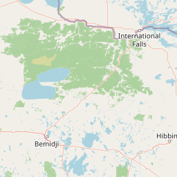
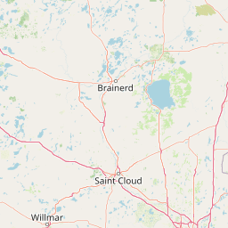
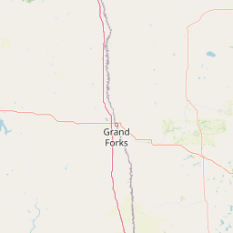
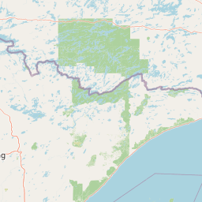
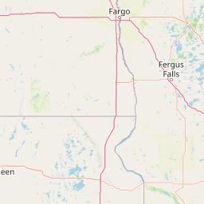
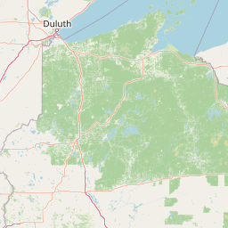
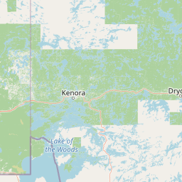
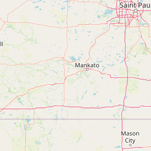
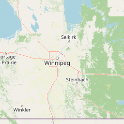
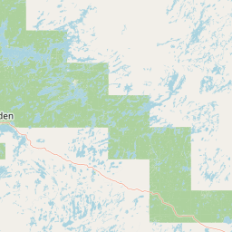
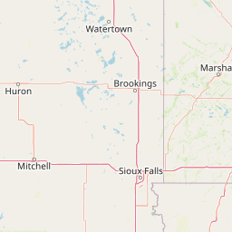
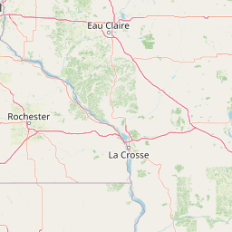
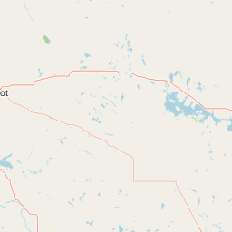
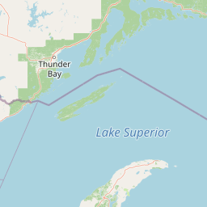
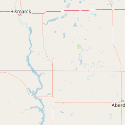
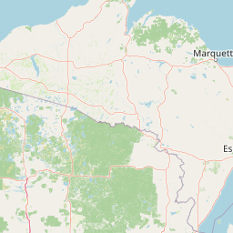
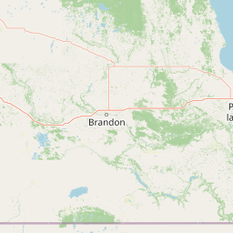
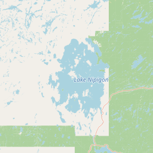
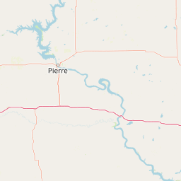
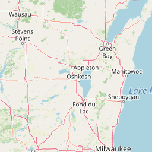
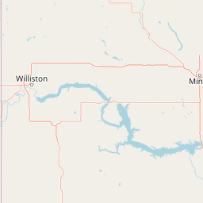
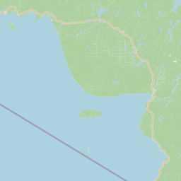
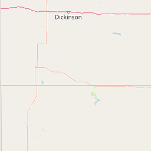
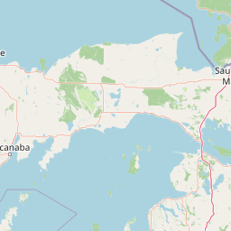
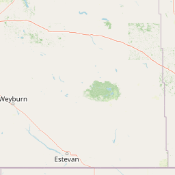
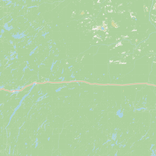
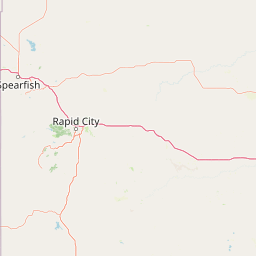
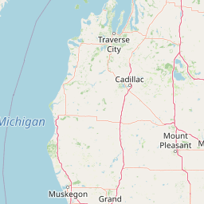
50 km
50 mi
Scale: 4,622,324
Elevation
2nd Gen Terrain (0.5m)
High
Low
Leaflet © OpenStreetMap contributors, MN DNR, Powered by Esri | City of Bismarck, City of Fargo, City of Moorhead, City of Sioux Falls, Fond du Lac Reservation, Province of Ontario, County of Brown, County of Calumet, County of Dakota, County of Dane, County of Sauk, County of Washington, WI, St. Louis County (MN), Iowa DNR, MN Dept Natural Resources, South Dakota Game Fish and Parks, Esri Canada, TomTom, Garmin, FAO, NOAA, USGS, EPA, NPS, USFWS, NRCan, Parks Canada